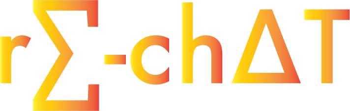

ONLINE:
Welcome to "re-chat", a service of "re-chat" Communications Limited and its affiliates (either "we" or "us"). These Terms of Use govern your use of the Web sites, applications, software, widgets and services of "re-chat" Video and its affiliated sites (the "Service").
BY ACCESSING, USING OR INTERACTING WITH THE SERVICE, YOU SIGNIFY ELECTRONICALLY THAT YOU AGREE TO THESE TERMS AND BY THE APPLICABLE PROVISIONS OF THE "re-chat" TERMS OF SERVICE INCLUDING BUT NOT LIMITED TO THE "re-chat" END-USER LICENSE AGREEMENT, PRIVACY POLICY AND USAGE NOTICES AND ANY OTHER DOCUMENTS AVAILABLE ON OR THROUGH http://www."re-chat".com/legal/ (COLLECTIVELY AND SEPARATELY REFERRED TO AS THE ""re-chat" TERMS OF SERVICE"). You consent to the "re-chat" Privacy Policy. If you do not agree, do not use the Service.
Any reference made in this Agreement to ""re-chat"" shall be deemed to have been made to "re-chat" Communications Limited, its subsidiaries, successors, assignees, and affiliates, as well as any company that controls "re-chat" Communications Limited, directly or indirectly, and any other subsidiary of that controlling company.
Changes to the Terms of Use. "re-chat" Communications Limited may change from time to time, the "re-chat" Terms of Service including these Terms of Use. You agree that your use of the Service beyond a period of 30 days after a notice of such change has been provided on the "re-chat" network or Web site for the first time, shall constitute your consent to the new or revised "re-chat" Terms of Service.
Children under 23. Please note that the Service, as well as the "re-chat" Website, network, system, software, service, servers, various directories and listings, various message and news boards, tools, information and databases, are NOT FOR USE BY CHILDREN UNDER 23 YEARS OF AGE. If it comes to "re-chat" Communications Limited's attention through reliable means that a registered user is a child under 23 years of age, "re-chat" Communications Limited will cancel that user's account.
About the Service. The Service is intended for general audiences and for personal and information use only. The Service offers information, audio and video content for viewing ("Content"), links to other site, and video search functionality provided by us and or our affiliates, to help users discover publicly available websites and their Content. You may submit queries to the Service search functionality at various "search box" areas, and search results shown on the Service, as well as certain other search-driven experiences will include links to third party websites or embedded displays of Content hosted and served from third party websites. Embedded displays are enabled by embed codes made available by third party host websites. The Service does not host Content that is embedded or linked to and is not responsible for the activities originating with the third party server of such Content. Some Content and some of these sites may contain materials that are objectionable, unlawful, or inaccurate. Providing access to the Content or these links does not mean that we endorse the Content, these third party sites or services. You acknowledge and agree that we are not responsible or liable to you for any Content or other materials hosted and served from these third party sites. The Service is a consumer service and is not designed to be used in connection with commercial activities by you, your employer or contractors. If you choose to do so, it is entirely at your own, and your employer's or contractor's, risk.
Registration. You do not need to sign up to visit the Service; however, certain interactive features, such as instant messaging or posting comments, are available only to users who register with us and obtain an "re-chat" account through the "re-chat" Network, after agreeing to the "re-chat" End-User License Agreement http://www."re-chat".com/legal/end-user-license.html.
Additional Terms. The Service may offer features and sites where you will be recorded via your webcamera. You agree that these features may be subject to supplemental rules that will be binding on you. The minimum terms in Section 13 will always apply to recordings of you.
Electronic Delivery Policy and Your Consent. You acknowledge that you are agreeing to these terms online and electronically. You authorize us to provide you with required notices, agreements and information concerning the Service electronically. We will provide you our notices either by sending them to the e-mail address that you give to us or by posting the notices on the home page of the Service or on the relevant web page of the applicable service. If you want to withdraw your consent to receive notices electronically, you must discontinue your use of the Service.
Privacy Policy. The "re-chat" Privacy Policy explains the practices that apply to your information when you use the Service. Your ongoing use of the Service signifies your consent to the Privacy Policy. You can review the Privacy Policy by clicking on the Privacy Policy available at http://www."re-chat".com/legal/privacy.html link located on the home page of the Service.
Changes to the Service. We may discontinue or change any service or feature on the Service at any time and without notice.
Access. You must provide at your own expense the equipment and Internet connections that you will need to access and use the Service. If you access the Service through a telephone line, please call your local phone company to determine if the access numbers you select are subject to long distance or other toll charges at your location. Also, wireless, data or text messaging charges apply if you access the Service through wireless applications (e.g., cell phones). Check with your carrier to verify whether there are any such fees that may apply to you.
Your Responsibilities. You may use the Service for lawful purposes only. You are responsible for all activities under your account, including all legal liability incurred from the use of your "re-chat" account by you or others. You agree that you will not access or use the Service or its Content, or otherwise engage in any conduct that:
violates or infringes the rights of others including, without limitation, patent, trademark, trade secret, copyright, publicity or other proprietary rights;
is unlawful;
uses technology or other means to access the Service or Content that is not authorized by us;
use or launch any automated system, including without limitation, "robots," "spiders," or "offline readers," to access the Service or Content;
attempts to introduce viruses or any other computer code, files or programs that interrupt, destroy or limit the functionality of any computer software or hardware or telecommunications equipment;
attempts to gain unauthorized access to our computer network or user accounts;
encourages conduct that would constitute a criminal offense, or that gives rise to civil liability; offers, promotes or encourages betting or wagering prohibited by law;
violates this Agreement, guidelines or any policy posted on the Service;
attempts to damage, disable, overburden, or impair our servers or networks; or
interferes with any other party's use and enjoyment of the Service.
You agree that we may take any legal and technical remedies to enforce these Terms of Use, including without limitation, immediate termination of your account or access to any Service if we believe in our discretion you are violating these Terms of Use.
No Spam. You may not use the Service or any of our communication tools to transmit, directly or indirectly, any unsolicited bulk communications (including e-mails and instant messages). You may not harvest information about our users for the purpose of sending, or to facilitate the sending, of unsolicited bulk communications. You may not induce or allow others to use the Service to violate the terms of this section. We may terminate your access or use of the Service immediately and take any other legal action if you, or anyone using your access to the Service, violates these provisions. We may take any technical remedies to prevent unsolicited bulk communications from entering, utilizing, or remaining within our computer or communications.
Proprietary Rights. We, our suppliers, and our users who lawfully post Content on the Service own the property rights to that Content. The Content is protected by international treaties, and by copyright, trademark, patent, and trade secret laws and other proprietary rights and also may have security components that protect digital information. You agree that you will not violate these rights and access and use the Content only for your own personal use, and only as authorized by the owners of these rights.
License To Use the Service. We grant you a personal, non-exclusive, non-transferable, limited and revocable license to use the Service subject to the terms of this Agreement. You may not use the Service in a manner that exceeds the rights granted for your use of the service and its Content. Without limitation of the foregoing, you may not frame any portion of the Service or Content, or reproduce, reprint, copy, store, publicly display, broadcast, transmit, modify, translate, port, publish, sublicense, assign, transfer, sell, loan, make derivative works or otherwise distribute the Content without our prior written consent. You may not circumvent any mechanisms for preventing the unauthorized reproduction or distribution of the Content or the Service. Your license terminates immediately upon cancellation or termination of your account or if we believe you are in violation of these Terms of Use. You agree that any licensor or provider of the Content on the Service is a third party beneficiary of this Agreement ("Licensor"), and that such Licensor will have the right to enforce such provisions in its own name, whether at law or in equity, to the same extent as if such Licensor was a party to this Agreement. You agree that you will not raise lack of privity as a defense against any Licensor seeking to enforce the provisions of this Agreement.
Content You Post To Public Areas. Certain areas of the Service may allow you to post Content (such as comments or upload videos or links thereto) that can be accessed and viewed by others, including the public in general. You may only post Content to public areas on the Service that you created or that you have permission to post. You many not publicly post defamatory Content or someone else's image or personal information without the express authorization of that person. You may not post Content that violates these Terms of Use. We do not claim ownership of any Content that you may post. However, by submitting Content to public areas of the Service, you grant us, our parent, affiliates, and distributors the right to use, copy, display, perform, distribute, adapt and promote this Content in any medium.
No Duty To Monitor. We do not control, monitor or review the Content uploaded, posted, transmitted or made available by others on or through the Service and, as such, shall not be responsible for any Content and do not guarantee the accuracy, adequacy, integrity or quality of such Content. You understand that by using the Service, you may be exposed to Content that is offensive, indecent or objectionable. We have the right in our sole discretion to refuse to post or to edit submitted Content. We reserve the right to remove Content for any reason, but we are not responsible for any failure or delay in removing such material.
Procedure For Making Claims Of Copyright Infringement. We respect the intellectual property of others. If you believe that your work has been copied and is accessible on the Service in a way that constitutes copyright infringement, please follow the instructions located at http://www."re-chat".com/legal/copyright.html on how to contact us to report possible copyright infringement.
Third Party Sites; Advertisers. The Service may include links to third party websites, including links provided as automated search results and links to certain related products or services. Some of these sites may contain materials that are objectionable, unlawful, or inaccurate. These links do not mean that we endorse these third party sites or services. We are not responsible or liable for any Content, the products or services, or other materials on these third party sites. You agree that the Service may be supported by advertising. Any dealings that you have with advertisers found on the Service are between you and the advertiser and you acknowledge and agree that we are not liable for any loss or claim you may have against an advertiser.
Use Of Software. We may make software available for you to download or use. Such software will be subject to the terms of the license agreement that accompanies it. If there is no license agreement presented to you with the software, then the following license, in addition to the other terms of these Terms of Use govern your use of such software. We grant you a personal, non-exclusive, non-transferable, limited license to install the software on any single computer. The software is protected by copyright and other intellectual property laws and treaties and is owned by us or our suppliers. You may not sell or redistribute the software. You may not incorporate it or any portion of it into another product. You may not reverse engineer, decompile, or disassemble the software or otherwise attempt to derive the source code (except where expressly permitted by law). You may not modify, adapt, or create derivative works from the software in any way or remove proprietary notices in the software. You agree to abide by all laws and regulations in effect regarding your use of the software. You may not authorize or assist any third party to do any of the things prohibited in this paragraph.
We may automatically check your version of the software and update it to improve its performance and capabilities. If you shut down the software during an automatic update or otherwise interfere with the installation of the update, the software may be damaged and/or cease to operate.
You agree to fully comply with all import and export laws, regulations, rules and orders of the United States, or any foreign government agency or authority, and that you will not directly or indirectly export, re-export, transfer and/or release the software, related technology, or any product thereof, for any proscribed end-use, or to any proscribed country, entity or person (wherever located), without proper authorization from the U.S. and/or foreign government. You bear responsibility for and assume all expenses relating to your compliance with the described laws, regulations, rules and orders, and for obtaining all necessary authorizations and clearances. You further agree to assume responsibility for and bear all expenses relating to your compliance with the described laws, regulations, rules and orders, and obtaining all necessary authorizations and clearances.
DISCLAIMER. WE PROVIDE THE SERVICE "AS IS" AND WITH ALL FAULTS. YES. SO WATCH OUT AS YOU ARE USING THE SERVICE AT YOUR OWN RISK. WE, OUR LICENSORS AND DISTRIBUTORS DISCLAIM ALL WARRANTIES, WHETHER EXPRESS OR IMPLIED, INCLUDING ANY WARRANTIES THAT THE SERVICE IS FREE OF DEFECTS AND ABLE TO OPERATE ON AN UNINTERRUPTED BASIS, THAT ALL DATA WILL BE SUCCESSFULLY OR SECURELY UPLOADED AND STORED ON THE SERVICE, OR THAT IT WILL MEET YOUR REQUIREMENTS. WE DISCLAIM THE IMPLIED WARRANTIES THAT THE SERVICE IS MERCHANTABLE, OF SATISFACTORY QUALITY, RELIABLE, ACCURATE, FIT FOR A PARTICULAR PURPOSE OR NEED, OR NON-INFRINGING, UNLESS SUCH IMPLIED WARRANTIES ARE LEGALLY INCAPABLE OF EXCLUSION. FURTHER, WE, OUR LICENSORS AND DISTRIBUTORS DO NOT WARRANT OR MAKE ANY REPRESENTATIONS REGARDING THE USE OR THE RESULTS OF THE SERVICE IN TERMS OF ITS CORRECTNESS, ACCURACY, PROFITABILITY OF THE SERVICE, RELIABILITY OR OTHERWISE. NO ORAL OR WRITTEN INFORMATION OR ADVICE GIVEN BY US OR AN AUTHORIZED REPRESENTATIVE SHALL CREATE A WARRANTY OR IN ANY WAY INCREASE THE SCOPE OF ANY WARRANTY THAT CANNOT BE DISCLAIMED UNDER APPLICABLE LAW. THIS DISCLAIMER OF WARRANTY CONSTITUTES AN ESSENTIAL PART OF THIS AGREEMENT.
LIMITATION OF LIABILITY. WE, OUR LICENSORS AND DISTRIBUTORS HAVE NO LIABILITY WITH RESPECT TO YOUR USE OF THE SERVICE. TO THE MAXIMUM EXTENT PERMITTED BY APPLICABLE LAW, IN NO EVENT SHALL WE OR OUR PARENT, AFFILIATES, DIRECTORS, EMPLOYEES, DISTRIBUTORS, LICENSORS, SUPPLIERS, PARTNERS, AGENTS OR RESELLERS BE LIABLE FOR ANY INDIRECT, SPECIAL, INCIDENTAL, CONSEQUENTIAL, OR EXEMPLARY DAMAGES ARISING OUT OF OR IN ANY WAY RELATING TO THIS AGREEMENT OR THE USE OF OR INABILITY TO USE THE SERVICE, INCLUDING, WITHOUT LIMITATION, DAMAGES FOR LOSS OF GOODWILL, WORK STOPPAGE, LOST PROFITS, LOSS OF DATA, CORRUPTION OF DATA, COMPUTER FAILURE OR MALFUNCTION. YOUR SOLE REMEDY WITH RESPECT TO ANY DISPUTE WITH US OR THE SERVICE IS TO CANCEL YOUR USE OF THE SERVICE.
Indemnification. You agree to defend, indemnify, and hold harmless us and our parent and other affiliated companies, and our respective employees, contractors, officers, directors, and agents from all liabilities, claims, and expenses, including attorney's fees that arise from your use or misuse of the Service. We reserve the right, at our own expense, to assume the exclusive defense and control of any matter otherwise subject to indemnification by you, in which event you will cooperate with us in asserting any available defenses.
International Use. We make no representation that the Service is appropriate or available for use in the country, geographic area or jurisdiction where you are located, and accessing it from territories where the Content accessed via the Service may be illegal or is prohibited. You are responsible for compliance with local laws when you access and use the Service.
Choice of Law and Location for Resolving Disputes. You agree that the laws of the Commonwealth of Virginia govern this contract and any claim or dispute that you may have against us, without regard to Virginia's conflict of laws rules, and that the United Nations Convention on Contracts for the International Sale of Goods shall have no applicability. You further agree that any disputes or claims that you may have against us will be resolved by a court located in the Commonwealth of Virginia and you agree and submit to the exercise of personal jurisdiction of such courts for the purpose of litigating any such claim or action.
PLEASE NOTE THAT BY AGREEING TO THESE TERMS OF USE, YOU ARE:
(1) WAIVING CLAIMS THAT YOU MIGHT OTHERWISE HAVE AGAINST US BASED ON THE LAWS OF OTHER JURISDICTIONS, INCLUDING YOUR OWN;
(2) IRREVOCABLY CONSENTING TO THE EXCLUSIVE JURISDICTION OF, AND VENUE IN, STATE OR FEDERAL COURTS IN THE COMMONWEALTH OF VIRGINIA OVER ANY DISPUTES OR CLAIMS YOU HAVE WITH US; AND
(3) SUBMITTING YOURSELF TO THE PERSONAL JURISDICTION OF COURTS LOCATED IN THE COMMONWEALTH OF VIRGINIA FOR THE PURPOSE OF RESOLVING ANY SUCH DISPUTES OR CLAIMS.
Severability and Integration. These Terms of Use, the "re-chat" Terms of Service and any supplemental terms, policies, rules and guidelines posted on the Service constitute the entire agreement between you and us and supersede all previous written or oral agreements. If any part of these Terms of Use is held invalid or unenforceable, that portion shall be construed in a manner consistent with applicable law to reflect, as nearly as possible, the original intentions of the parties, and the remaining portions shall remain in full force and effect.
Termination. Your right to use the Service automatically terminates if you violate these Terms of Use or any rules or guidelines posted in connection with the Service. We also reserve the right, in our sole discretion, to terminate your access to all or part of the Service, for any reason, with or without notice.